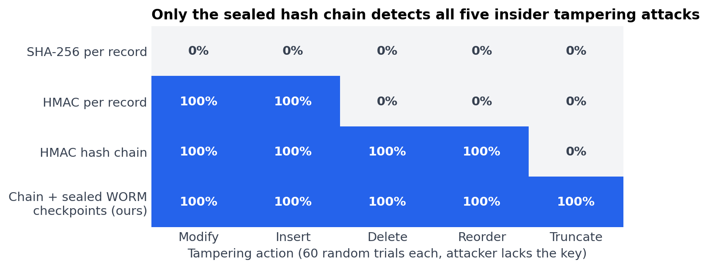
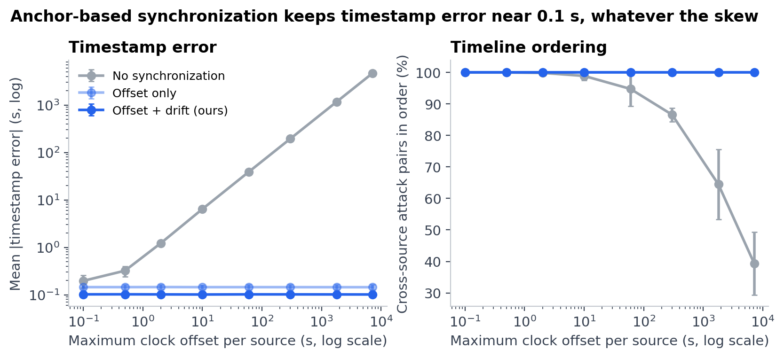
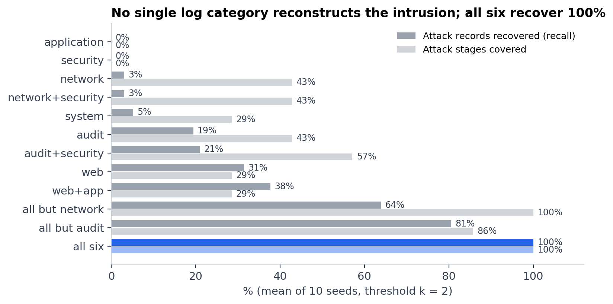
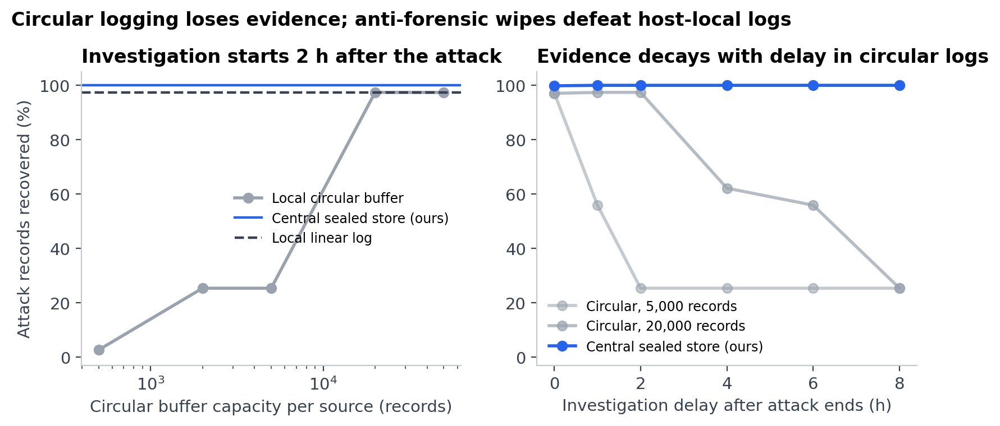
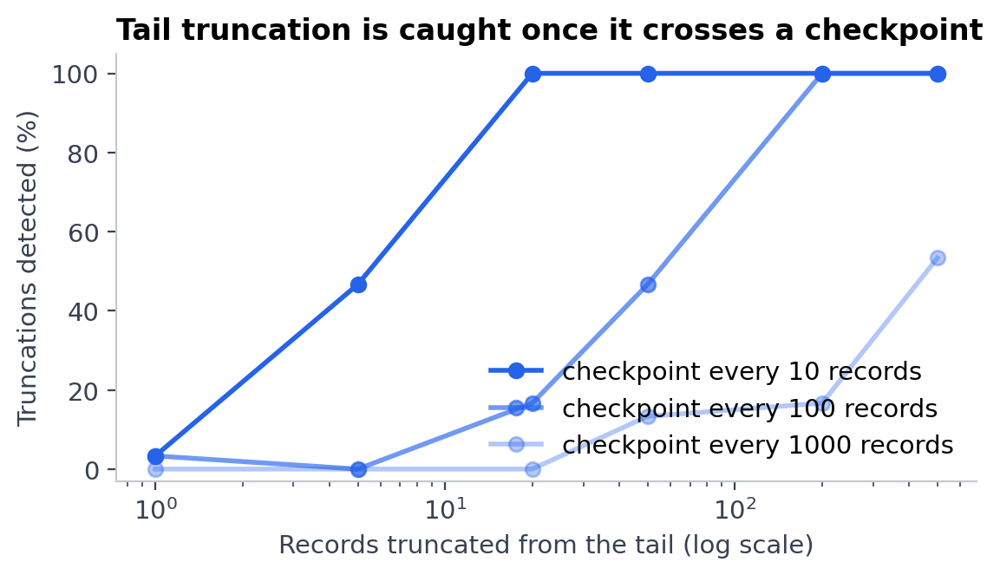
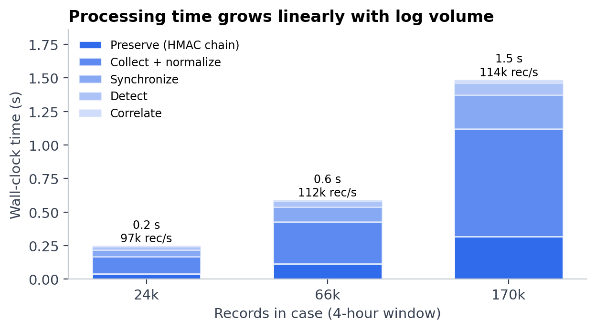

ACM Computing Surveys 2016 implementation: 3-tier architecture with multi-source clock synchronization, tamper-evident hash chaining, and cross-source intrusion reconstruction.
| Synchronized Time (UTC) | Rule | Source | Forensic Evidence Record |
|---|---|---|---|
| 2026-10-01 01:39:14 | R1 404 Burst | web | 185.220.101.47 GET /cgi-bin/test.cgi -> 404 |
| 2026-10-01 01:45:02 | R2 SQLi | web | 185.220.101.47 GET /api/search?q=shoes' -> 500 |
| 2026-10-01 01:45:02 | R2 SQLi | application | db.error req=79b86ea3214ce4c2 {"err": "syntax error at or near \"'\""} |
| 2026-10-01 01:45:35 | R2 SQLi | web | 185.220.101.47 GET /api/search?q=x' UNION SELECT null,null-- -> 200 |
| 2026-10-01 01:54:27 | R3 Svc Login | security | LOGIN_FAILURE user=svc-backup from 185.220.101.47 |
| 2026-10-01 01:54:52 | R3 Svc Login | security | LOGIN_SUCCESS user=svc-backup from 185.220.101.47 |
| 2026-10-01 01:57:49 | R4 High Risk IAM | audit | CreateAccessKey by svc-backup (AKIABACKUP0000000001) |
| 2026-10-01 01:58:21 | R4 High Risk IAM | audit | AttachUserPolicy by svc-backup (AKIABACKUP0000000001) |
| 2026-10-01 02:05:02 | R5 SSH Lateral | network | 10.0.1.10:36740 -> 10.0.4.10:22 (83,676 B) |
| 2026-10-01 02:05:03 | R5 SSH Lateral | system | SSH login dbadmin from 10.0.1.10 |
| 2026-10-01 02:06:24 | R6 Bulk Egress | network | 10.0.4.10:41499 -> 45.137.21.9:443 (284 MB) |
| 2026-10-01 02:06:54 | R8 Object Read | audit | GetObject by svc-backup (AKIA1DDFF5F0BD9CA773) |
| 2026-10-01 02:16:34 | R7 Log Tampering | system | sudo dbadmin /usr/bin/truncate -s 0 /var/log/auth.log |
| 2026-10-01 02:16:40 | R7 Log Tampering | system | sudo dbadmin /usr/bin/rm -f /root/.bash_history /tmp/.c.dump |
| 2026-10-01 02:18:24 | R4 High Risk IAM | audit | StopLogging by svc-backup (AKIA1DDFF5F0BD9CA773) |
| Clock Domain | Offset (s) | Drift (s/h) |
|---|---|---|
web-1 | +0.553 s | -0.0841 s/h |
web-2 | -1.831 s | -0.1753 s/h |
app-1 | +1.258 s | +0.1474 s/h |
vm-db-1 | +1.302 s | -0.1863 s/h |
idp-1 | +0.407 s | +0.0853 s/h |
vpc | +0.176 s | +0.1566 s/h |
cloudtrail | 0.000 s | 0.0000 s/h |
| Evidence File | Records | Checkpoints | Verified |
|---|---|---|---|
web-1.access.log | 10,791 | 11 | ✓ Yes |
web-2.access.log | 10,723 | 11 | ✓ Yes |
app-1.jsonl | 17,164 | 18 | ✓ Yes |
vpc-flow.log | 22,996 | 23 | ✓ Yes |
cloudtrail.jsonl | 2,327 | 3 | ✓ Yes |
vm-db-1.syslog | 842 | 1 | ✓ Yes |





